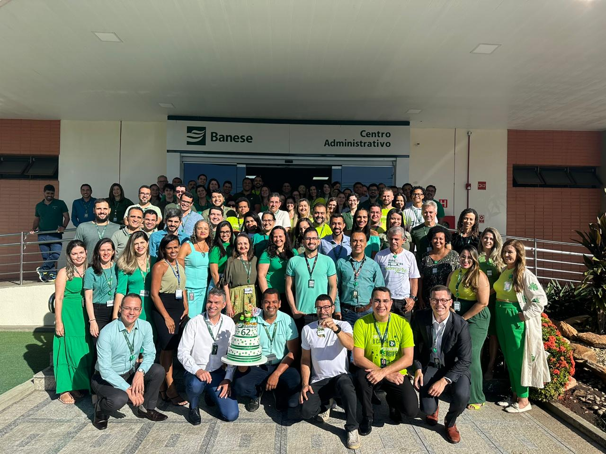

Bem-vindo(a) ao meu mundo digital! Sou um estudante dedicado do curso de Análise e Desenvolvimento de Sistemas dena area de TI, apaixonado por tecnologia e inovação.
Ao longo da minha jornada acadêmica, tenho buscado constantemente expandir meus conhecimentos e habilidades na área de desenvolvimento de software.
Neste espaço, convido você a explorar meu portfólio, onde compartilho alguns dos projetos mais significativos nos quais tenho trabalhado. Desde aplicativos web e mobile até sistemas complexos, cada projeto reflete meu compromisso com a excelência técnica e minha paixão por criar soluções que impactem positivamente a vida das pessoas.
Aqui, você encontrará não apenas códigos e designs, mas também insights sobre minha abordagem para resolver problemas e meu processo criativo. Estou empolgado(a) em compartilhar minha jornada de aprendizado e crescimento com você. Então, vamos começar a explorar!
Aos 19 anos, nascido em Aracaju, Sergipe, estou imerso no curso de
Análise e Desenvolvimento de Sistemas na Universidade
Uninabuco/Uninassau, onde mergulho no universo da computação com
entusiasmo.
Tenho me dedicado a ampliar minha expertise, explorando tecnologias
como Java, Python, JavaScript, HTML e CSS, e me familiarizando com
ferramentas como Git e GitHub, fundamentais para colaboração em
projetos.
Estou constantemente em busca de novos desafios e oportunidades de
aprendizado, com o objetivo de crescer profissionalmente na área
de TI e contribuir com soluções inovadoras para os desafios
tecnológicos contemporâneos.
Victor Guilherme, um entusiasta da tecnologia, pronto para
explorar novos horizontes e enfrentar os desafios do mundo
digital com determinação e paixão.
Experiência Profissional
Participei do programa Jovem Aprendiz no CIEE e trabalhei pelo Banco do Estado de Sergipe - Banese. Lá, tive um contrato de 2 anos. Meu cargo na empresa era de escriturário de banco. Trabalhei no setor de ordens judiciais, mas era proativo para os demais setores da empresa também. Desenvolvi diversas funções, sendo algumas delas:
Execução das tarefas designadas pela equipe, com atenção aos detalhes para evitar erros;
Realização de atividades extras à função quando solicitado, auxiliando colegas e superiores pelo benefício da equipe;
Apoio em tarefas administrativas, incluindo alimentação de planilhas e organização de documentos;
Planejamento e execução de atividades conforme os prazos estabelecidos, contribuindo para o bom andamento das operações.
Também fiz alguns cursos profissionalizantes pela UCB - Banese, que é meio que uma plataforma de cursos para os funcionários se especializarem mais e mais. Então, fiz alguns cursos como LGPD - Lei Geral de Proteção de Dados, Gestão de processos, Princípios de segurança da informação, PLDFT Agências, entre outros. No CIEE, onde era minha capacitação teórica, tive diversas certificações na área administrativa, além de receber palestras profissionalizantes.

Meus Projetos
Santana's Grill & Burgers
O projeto "Santana's Grill & Burgers" é uma aplicação web desenvolvida com o
objetivo de proporcionar aos clientes uma experiência simplificada de visualização
do cardápio e realização de pedidos online.